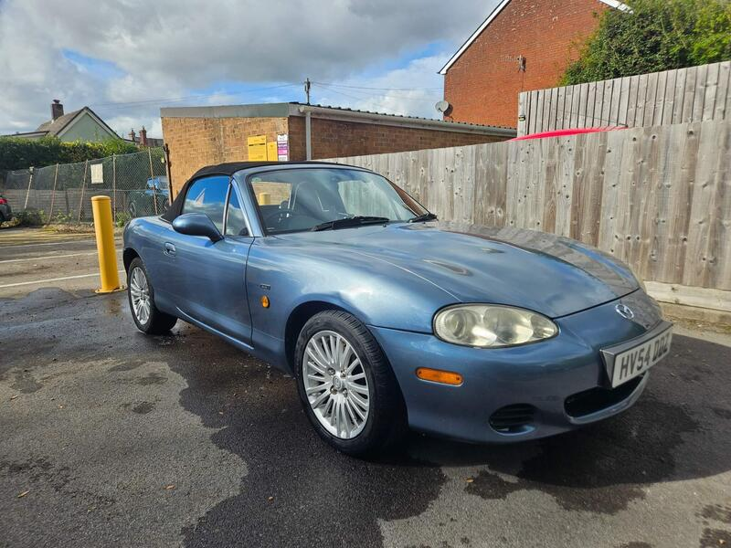
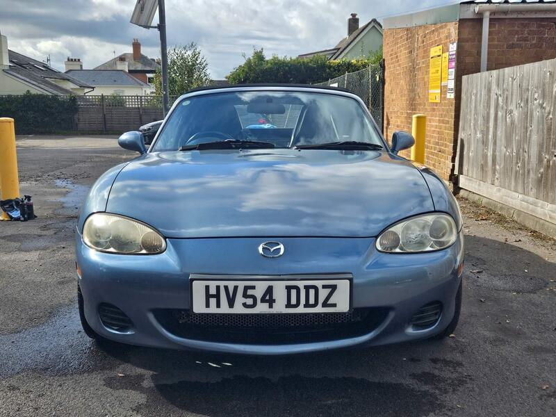
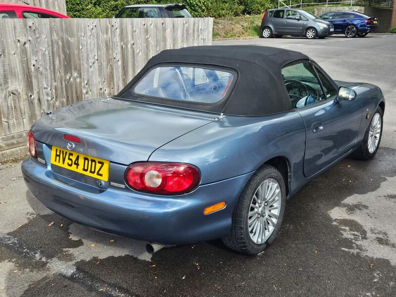
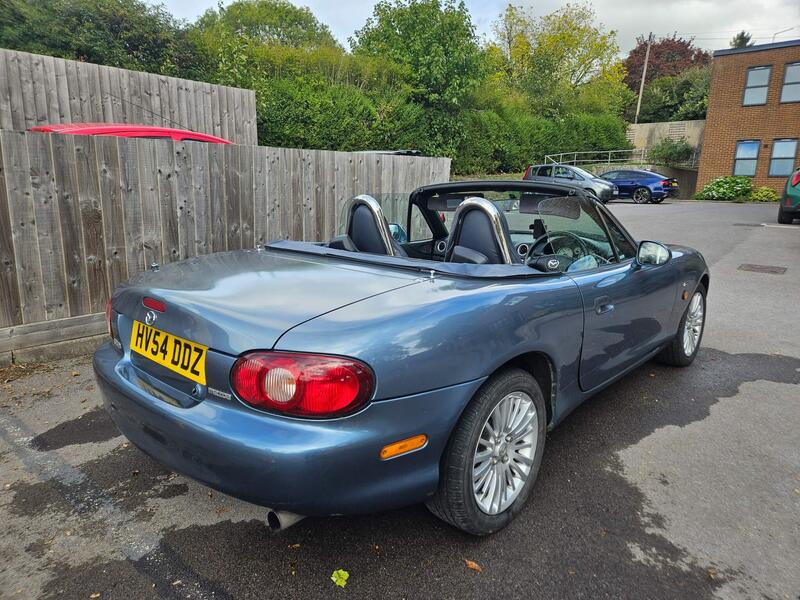

Seller photos from the AutoTrader ad.
2004 MX-5 1.8 Arctic
Our best value: a nearby, documented limited edition at £3,500.
Key facts
| Price | £3,500 |
|---|---|
| Year | 2004 |
| Miles | 59,197 |
| Variant | 1.8 Arctic Limited Edition |
| Edition | Arctic |
| Engine | 1.8 |
| Colour | Blue |
| Registration | 2004 (54 reg) |
| Owners | 4 owners |
| Service history | Full |
| Seller | Private seller |
| Location | Salisbury |
| From Poole | ~35 mi (estimate) |
| Source | AutoTrader, checked 12 Oct 2026 |
Why buy it
- Arctic edition 1.8 with heated seats and air con
- Full service history, unmodified
- Closest to Poole, about 35 mi
Things to check
- Rust in the rear arches
Rust in the rear arches (ad)
- Damage to the boot lock from an attempted break-in
Damage to the boot lock from an attempted break-in (ad)
- MOT until April
MOT until April (ad)
- Mk2.5 weak spots
Sills, rear arches and chassis rails for rust, the hood seams, and when the cambelt was last changed.
Seller says (extract)
“3 Previous Owners, MOT Until April, Full Service History. Reluctantly selling my much loved Mazda MX-5. In Arctic Trim, this car features both heated seats and air-conditioning, and the more powerful 1.8l Engine. Car has been a joy to drive and well looked after, and has received a new Crank Position, MAF sensor, fuel filter and throttle body in my ownership, alongside other general maintenance. Car is mechanically in great condition, though it does have expected rust in the rear arches seen commonly on these models, and the typical wear and tear scratches expected of a car of this age. Please see the image of the rear boot lock damage from an attempted break in, this does not affect boot operation, and it still locks perfectly fine.…”